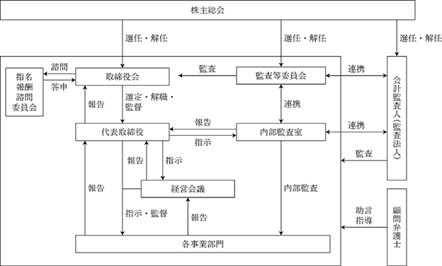

※ 当事業年度の末日（2024年１月31日）における内容を記載しております。提出日の前月末現在（2024年３月31日）において、記載すべき内容が当事業年度の末日における内容から変更がないため、提出日の前月末現在に係る記載を省略しております。
(注) １．新株予約権１個につき目的となる株式数は、3,200株とする。
ただし、新株予約権の割当日後、当社が株式分割、株式併合を行う場合は、次の算式により付与株式数を調整、調整の結果生じる１株未満の端数は、これを切り捨てる。
また、当社が他社と合併を行う場合、または当社が会社分割を行う場合その他これらの場合に準じて目的となる株式の数の調整を必要とすると当社が認めた場合、当社は合理的な範囲で目的たる株式の数の調整を行うことができるものとする。
２．新株予約権の割当日後、当社が株式分割、株式併合を行う場合は、次の算式により払込金額を調整し、調整により生ずる１円未満の端数は切り上げる。
また、新株予約権の割当日後に時価を下回る価額で新株式の発行または自己株式の処分を行う場合は、次の算式により払込金額を調整し、調整により生ずる１円未満の端数は切り上げる。
なお、上記算式において、「既発行株式数」とは、当社発行済株式数から、当社が保有する自己株式の総数を控除した数とし、また、自己株式の処分を行う場合には、「新規発行株式数」を「処分する自己株式数」に読み替えるものとする。
当社が資本の減少、合併または会社分割を行う場合等、行使価額の調整を必要とするやむを得ない事由が生じたときは、資本減少、合併または会社分割の条件等を勘案の上、合理的な範囲で行使価額を調整するものとする。
３．権利行使請求期間の最終日が当社の休日に当たる場合は、その前営業日を最終日とする。
４．新株予約権の行使の条件
① 新株予約権の割当てを受けた者は、権利行使時においても、当社または当社子会社の取締役、監査役、従業員の地位にあることを要す。ただし、任期満了による退任、定年退職その他正当な理由のある場合にはこの限りではない。
② 新株予約権者の譲渡、質入れその他一切の処分及び相続は認めない。
③ 新株予約権の目的たる株式が、金融商品取引所に上場された日（以下、「上場日」という。）または権利行使期間の開始日のいずれか遅い方の日以後において新株予約権を行使することができる。
５．組織再編成行為に伴う新株予約権の交付に関する事項
当社が、合併(当社が消滅会社となる場合に限る)、株式交換または株式移転(以上を総称して「組織再編行為」という。)をする場合であって、かつ、当該組織再編行為に係る契約または計画において、会社法第236条第１項第８号のイ、ニ、ホに掲げる株式会社（以下、「再編対象会社」という。）の新株予約権を交付する旨を定めた場合に限り、組織再編行為の効力発生日(新設型再編においては設立登記申請日。)の直前において残存する募集新株予約権の新株予約権者に対し、当該募集新株予約権の消滅と引き換えに、再編対象会社の新株予約権を交付することとする。
６．当社は2015年８月31日付で普通株式１株を200株、2016年10月１日付で普通株式１株を４株および2018年９月１日付けで普通株式１株を４株とする株式分割を行っております。これにより「新株予約権の目的となる株式の数」「新株予約権の行使時の払込金額」「新株予約権の行使により株式を発行する場合の株式の発行価格及び資本組入額」が調整されております。
※ 当事業年度の末日（2024年１月31日）における内容を記載しております。提出日の前月末現在（2024年３月31日）において、記載すべき内容が当事業年度の末日における内容から変更がないため、提出日の前月末現在に係る記載を省略しております。
（注）１．新株予約権の行使の条件に関する事項は次のとおりであります。
(1）新株予約権者は、2025年１月期から2028年１月期までのいずれかの期において、当社のEBITDAが、1,500百万円を超過した場合にのみ、これ以降本新株予約権を行使することができる。なお、ここでいうEBITDAについては「営業利益（ただし、本新株予約権に係る株式報酬費用が計上されている場合においては、これによる影響を排除した株式報酬費用控除前営業利益とする）＋減価償却費＋のれん償却費」を参照するものとする。また、上記におけるEBITDAの判定に際しては、適用される会計基準の変更や当社の業績に多大な影響を及ぼす企業買収等の事象が発生し当社の連結損益計算書（連結損益計算書を作成していない場合には損益計算書）及び連結キャッシュ・フロー計算書（連結キャッシュ・フロー計算書を作成していない場合にはキャッシュ・フロー計算書）に記載された実績数値で判定を行うことが適切ではないと取締役会が判断した場合には、当社は合理的な範囲内で当該企業買収等の影響を排除し、判定に使用する実績数値の調整を行うことができるものとする。
(2）上記(1)に加えて、新株予約権者は本新株予約権の割当日から行使期間の満期日までにおいて、当社の時価総額（次式によって算出するものとする。）が、450億円を超過した場合に限り、本新株予約権を行使することができる。
(3）新株予約権者は、本新株予約権の権利行使時において、当社または当社の子会社もしくは関連会社の取締役、監査役もしくは従業員または顧問もしくは業務委託先等の社外協力者であることを要する。ただし、任期満了による退任、定年退職、その他正当な理由があると当社取締役会が認めた場合は、この限りではない。
(4）新株予約権者の相続人による本新株予約権の行使は認めない。
(5）本新株予約権の行使によって、当社の発行済株式総数が当該時点における発行可能株式総数を超過することとなるときは、当該本新株予約権の行使を行うことはできない。
(6）各本新株予約権１個未満の行使を行うことはできない。
２. 新株予約権の割当日後、当社が株式分割または株式併合を行う場合、次の算式により行使価額を調整し、調整による１円未満の端数は切り上げる。
また、新株予約権の割当日後に時価を下回る価額で新株式の発行または自己株式の処分を行う場合は、次の算式により払込金額を調整し、調整により生ずる１円未満の端数は切り上げる。
なお、上記算式において、「既発行株式数」とは、当社発行済株式数から、当社が保有する自己株式の総数を控除した数とし、また、自己株式の処分を行う場合には、「新規発行株式数」を「処分する自己株式数」に読み替えるものとする。
当社が資本の減少、合併または会社分割を行う場合等、行使価額の調整を必要とするやむを得ない事由が生じたときは、資本減少、合併または会社分割の条件等を勘案の上、合理的な範囲で行使価額を調整するものとする。
３．本新株予約権は、コタエル信託株式会社を受託者とする信託に割り当てられ、信託期間満了日時点の役職員等のうち受益者として指定された者に交付されます。
４．権利行使請求期間の最終日が当社の休日に当たる場合は、その前営業日を最終日とする。
５．組織再編成行為に伴う新株予約権の交付に関する事項
当社が、合併（当社が合併により消滅する場合に限る。）、吸収分割、新設分割、株式交換または株式移転（以上を総称して、以下「組織再編行為」という。）を行う場合において、組織再編行為の効力発生日に新株予約権者に対し、それぞれの場合につき、会社法第236条第１項第８号イからホまでに掲げる株式会社（以下「再編対象会社」という。）の新株予約権を以下の条件に基づきそれぞれ交付することとする。ただし、以下の条件に沿って再編対象会社の新株予約権を交付する旨を、吸収合併契約、新設合併契約、吸収分割契約、新設分割計画、株式交換契約または株式移転計画において定めた場合に限るものとする。
(1）交付する再編対象会社の新株予約権の数
新株予約権者が保有する新株予約権の数と同一の数をそれぞれ交付する。
(2）新株予約権の目的である再編対象会社の株式の種類
再編対象会社の普通株式とする。
(3）新株予約権の目的である再編対象会社の株式の数
組織再編行為の条件を勘案のうえ、上記「新株予約権の目的となる株式の数」に準じて決定する。
(4）新株予約権の行使に際して出資される財産の価額
交付される各新株予約権の行使に際して出資される財産の価額は、組織再編行為の条件等を勘案のうえ、上記「新株予約権の行使時の払込金額」で定められる行使価額を調整して得られる再編後行使価額に、上記(3)に従って決定される当該新株予約権の目的である再編対象会社の株式の数を乗じた額とする。
(5）新株予約権を行使することができる期間
上記「新株予約権の行使期間」に定める行使期間の初日と組織再編行為の効力発生日のうち、いずれか遅い日から上記「新株予約権の行使期間」に定める行使期間の末日までとする。
(6）新株予約権の行使により株式を発行する場合における増加する資本金及び資本準備金に関する事項
上記「新株予約権の行使により株式を発行する場合の株式の発行価格及び資本組入額」に準じて決定する。
(7）譲渡による新株予約権の取得の制限
譲渡による取得の制限については、再編対象会社の取締役会の決議による承認を要するものとする。
(8）その他新株予約権の行使の条件
上記「新株予約権の行使の条件」に準じて決定する。
(9）新株予約権の取得事由及び条件
上記「自己新株予約権の取得の事由及び取得の条件」に準じて決定する。
(10）その他の条件については、再編対象会社の条件に準じて決定する。
該当事項はありません。
③ 【その他の新株予約権等の状況】
該当事項はありません。
該当事項はありません。
(注) １.新株予約権（ストック・オプション）の権利行使による増加であります。
2024年１月31日現在
(注）自己株式1,988,124株は、「個人その他」に19,881単元、「単元未満株式の状況」に24株含まれております。
2024年１月31日現在
（注）所有株式数の割合は、自己株式1,998,124株を控除して算出しております。
2024年１月31日現在
（注）「単元未満株式」欄の普通株式には当社所有の自己株式24株が含まれております。
2024年１月31日現在
該当事項はありません。
会社法第165条第３項の規定により読み替えて適用される同法第156条の規定に基づく取得
該当事項はありません。
(注) 当期間における取得自己株式には、2024年４月１日から有価証券報告書提出日までの単元未満株式の買取りによる株式数は含めておりません。
当社は、中長期的かつ継続的な企業成長の向上を目指しており、そのためには、将来の成長を見据えたサービスへの先行投資や設備投資を積極的に行うことが重要だと認識しております。同時に、業績や配当性向などを勘案しながら株主の皆様への継続的かつ安定的に配当することを基本方針としております。
当社の剰余金の配当決定機関は、期末配当については株主総会、中間配当については取締役会でありますが、期末配当として年１回の剰余金の配当を行うことを基本方針としております。
当事業年度の剰余配当金につきましては、１株あたり4.0円（配当性向28.4％）としております。
内部留保金の使途につきましては、事業の効率化と事業拡大のための投資等に充当し、なお一層の業容拡大を目指すこととしております。
なお、当社は中間配当を取締役会決議によって行うことができる旨を定款に定めております。
（注）基準日が当事業年度に属する剰余金の配当は、以下のとおりであります。
①コーポレート・ガバナンスに関する基本的な考え方
当社は、企業価値を向上させ、株主利益を最大化するとともに、ステークホルダーと良好な関係を築いていくために、コーポレート・ガバナンスの確立が不可欠なものと認識しております。
具体的には、代表取締役以下、当社の経営を負託された取締役等が自らを律し、その職責に基づいて適切な経営判断を行い、当社の営む事業を通じて利益を追求すること、財務の健全性を確保してその信頼性を向上させること、説明責任を果たすべく積極的に情報開示を行うこと、実効性ある内部統制システムを構築すること、並びに監査等委員が独立性を保ち十分な監査機能を発揮すること等が重要であると考えております。
②企業統治の体制の概要及び当社体制を採用する理由
イ．企業統治の体制の概要
当社は、取締役会設置会社であり、かつ監査等委員会設置会社であります。当社が設置している主な会社の主要な機関は以下のとおりです。
（取締役会）
当社の取締役会は、代表取締役２名（清水祐孝、小林史生）、取締役（監査等委員であるものを除く）１名（鴇田英之）、社外取締役（監査等委員であるものを除く）１名（余語邦彦）、監査等委員である取締役３名（新森公夫、河合順子、植松則行）の計７名で構成されており、経営の基本方針、経営計画、法令に定められた事項、その他財務及び事業の方針等経営に関する重要な事項を審議・決定しています。取締役会の開催は「取締役会規程」に基づき、原則として毎月１回の定時取締役会を開催しているほか、経営上の重要事項が発生した場合には、必要に応じて臨時取締役会を開催しております。取締役会の議長は代表取締役会長ＣＥＯの清水祐孝であります。
（経営会議）
当社では、原則として毎週１回経営会議を開催し、取締役会決議事項以外の重要な決議、各事業部門からの報告事項が上程され、審議等を行うことにより、経営の透明化を図っております。経営会議は主に業務を執行する取締役（清水祐孝、小林史生、鴇田英之）及び執行役員（岩﨑考洋、水野聡志、廣瀬周一、重田正明）により構成されております。経営会議の構成員は、業務執行状況を報告するとともに、関係法令に抵触する可能性のある事項がある場合は、必ず経営会議に報告しております。経営会議の議長は代表取締役社長ＣＯＯの小林史生であります。
（監査等委員会）
当社の監査等委員会は、監査等委員である取締役３名（新森公夫、河合順子、植松則行）で構成されております。全員が提出日現在の会社法における社外取締役であり、公認会計士２名及び弁護士１名を含んでおります。監査等委員である取締役は取締役会その他社内会議に出席し、業務執行取締役の職務執行について適宜意見を述べております。さらに監査等委員である取締役は、監査計画に基づき監査を実施し、構成する監査等委員会を毎月１回開催するほか必要に応じて臨時監査等委員会を開催しております。また、内部監査室及び会計監査人と定期的に会合を開催することにより、監査に必要な情報の共有化を図っております。監査等委員会の議長は新森公夫であります。
（指名報酬諮問委員会）
当社では、取締役会の諮問機関として指名報酬諮問委員会を設置し、取締役の指名及び取締役（監査等委員であるものを除く。）の報酬の決定に関する手続きの公正性・透明性・客観性の強化を図っております。指名報酬諮問委員会の構成員は代表取締役社長ＣＯＯの小林史生、社外取締役である余語邦彦、および監査等委員である取締役新森公夫により構成され、独立社外取締役が過半数を占めることとしております。指名報酬諮問委員会の議長は、監査等委員である取締役の新森公夫であります。
a.取締役会の活動状況
当事業年度は、取締役会を15回開催しており、個々の取締役の出席状況については、次のとおりであります。
b.監査当委員会の活動状況
当事業年度は、監査等委員会を16回開催しており、個々の取締役の出席状況については、次のとおりであります。
c.指名報酬諮問委員会の活動状況
当事業年度は、指名報酬諮問委員会を４回開催しており、個々の取締役の出席状況については、次のとおりであります。
ロ．当該体制を採用する理由
当社は、監査等委員会設置会社であります。監査等委員は全員社外取締役であり、公認会計士や弁護士を含む３名であり、各自が豊富な実務経験と専門的知識を有しております。
取締役のうち４名は提出日現在の会社法における社外取締役であります。
当社が属するインターネット業界はまだ成長途上にあり、経営戦略を迅速に実行していく必要がある一方で、社会的信頼を得るために経営の透明性及び健全性の観点から、当該企業統治の体制を採用しております。
当社のコーポレート・ガバナンス体制は、以下の図のとおりであります。

③企業統治に関するその他の事項
イ．内部統制システムの整備の状況
当社は、企業経営の透明性及び公平性を確保するために、内部統制に関する基本方針及び各種規程を制定し、内部統制システムを構築し、運用の徹底を図っております。また、内部統制システムが有効に機能していることを確認するために、内部監査室による内部監査を実施しております。
当社では、会社法及び会社法施行規則に基づき、以下のような業務の適正性を確保するための体制整備の基本方針として、内部統制システムの基本方針を定めております。
1. グループ全社の取締役及び使用人の職務の執行が法令及び定款に適合することを確保するための体制
(1) 当社はコンプライアンス規程を策定し、コンプライアンス体制の整備及び問題点の把握に努める。
(2) グループ全社の取締役及び使用人に対して、コンプライアンスの教育・研修を継続的に行う。
(3) 内部通報制度の利用を促進し、グループ全社における法令・定款違反等又はそのおそれのある事実の未然防止・早期発見に努める。
(4) 法令・定款違反等の行為が発見された場合には、コンプライアンス規程に従って、取締役会に報告の上、外部専門家と協力しながら対応に努める。
(5) グループ全社の取締役及び使用人の法令・定款違反等の行為については、就業規則等に基づき適正に処分を行う。
(6) 法令・定款違反等の行為が発見された場合には、リスク対策委員会が原因の究明及び再発防止策の策定を行い、内部統制委員会が取締役及び使用人に対する再発防止策の周知徹底を行う。
(7) 市民社会の秩序や安全に脅威を与える反社会的勢力とは一切の関係を遮断するとともに、これら反社会的勢力に対しては、警察等の外部専門機関と緊密に連携し、全社を挙げて毅然とした態度で対応する。
2. グループ全社の取締役の職務の執行に係る情報の保存及び管理に関する体制
(1) 情報セキュリティ管理規程に基づき、情報セキュリティに関する責任体制を明確化するとともに、情報セキュリティ・マネジメント・システムを確立し、情報セキュリティの維持・向上のための施策を継続的に実施する。
(2) 取締役の職務に関する各種の文書及び帳票類等については、適用ある法令及び文書管理規程に基づき適切に作成するとともに、保存し、管理する。
(3) 取締役の職務の執行に必要な、株主総会議事録、取締役会議事録、経営会議議事録又は事業運営上の重要事項に関する決裁書類等の文書については、取締役が常時閲覧し得るものとする。
3. グループ全社の損失の危険の管理に関する規程その他の体制
(1) 当社は、リスクを適切に認識し、管理するための規程としてリスク管理規程を制定し、想定されるリスクに応じて有事に備えるとともに、グループ全社において有事が発生した場合には、当該規程に従い迅速かつ適切に対応する。
(2) リスク管理に関する当社の方針の策定、リスク対策の実施状況の点検及びフォロー並びにリスクが顕在化した時のコントロールを行うためにリスク対策委員会を設置する。リスク対策委員会は、審議・活動の内容を定期的に取締役会に報告する。
(3) グループ全社の取締役及び使用人に対して、リスク管理に関する教育・研修を継続的に行う。
4. グループ全社の取締役の職務の執行が効率的に行われることを確保するための体制
(1) グループ全社は、各社における業務の適正化及び効率化の観点から、業務プロセスの改善及び標準化に努めるとともに、情報システムによる一層の統制強化を図る。グループ全社の各部門は、関連するスタッフ部門の支援の下で、これを実施する。
(2) 会社の意思決定方法については、グループ全社それぞれで職務権限規程において明文化し、重要性に応じた意思決定を行う。
(3) 職務執行に関する権限及び責任については、グループ全社それぞれで業務分掌規程、職務権限規程その他の社内規程において明文化し、業務を適正かつ効率的に行う。
(4) これらの業務運営状況について、内部監査室による内部監査を実施し、その状況を把握し、改善を図る。
5. 当社及びその子会社からなる企業集団における業務の適正を確保するための体制
(1) 子会社管理規程を作成し、子会社を管理する体制の整備及び報告事項を定める。
(2) 子会社に取締役を派遣し、子会社の取締役の業務執行を監視する。派遣された取締役は、業務執行について、当社の方針に沿った経営に努めるものとする。
(3) 子会社は、取締役会にて重要な決議をする場合は、事前に当社の決裁を得るものとする。
(4) 子会社は、当社が策定した経営方針・経営計画を踏まえ、子会社の権限と責任を明確にしたうえで、各事業の特性等を踏まえた自律的な経営を行うものとする。
6. 監査等委員会の職務を補助すべき取締役及び使用人に関する事項
(1) 監査等委員会は、内部監査室に対して、その監査業務に協力させることができる。
(2) 監査等委員会は、監査業務に必要な補助すべき使用人（以下「補助使用人」という。）の設置（地位や人数の設定を含む。）を指定することができる。なお、監査等委員会の職務を補助すべき取締役は置かない。
7. 補助使用人の他の取締役からの独立性並びに監査等委員会の補助使用人に対する指示の実効性の確保に関する事項
(1) 補助使用人の人事異動、人事評価及び懲戒処分を行う場合は、監査等委員会の意見を聴取し、その意見を十分尊重して実施するものとする。
(2) 補助使用人は、監査等委員会の指示に基づく業務を行うに際しては、所属する上長の指揮命令を受けないものとするとともに、内部監査室をはじめとする執行部門の有する調査権限を有し、必要に応じて取締役会、経営会議その他の重要な会議に出席することができるものとする。
8. 当社の取締役及び使用人が監査等委員会に報告をするための体制並びに当該報告をした者が当該報告をしたことを理由として不利な取扱いを受けないことを確保するための体制
(1) 当社の取締役及び使用人は、法定の事項に加え、当社に重大な影響を及ぼすおそれのある事項、重要な会議体で決議された事項、内部監査の状況等について、遅滞なく監査等委員会に報告する。
(2) 当社の取締役及び使用人は、監査等委員会の求めに応じ、速やかに業務執行の状況等を報告する。
(3) 当社は、監査等委員会への報告を行った当社の取締役及び使用人に対し、当該報告をしたことを理由として不利な取扱いを行うことを禁止し、その旨を当社の取締役及び使用人に周知徹底する。
9. 監査等委員の職務の執行について生ずる費用の前払又は償還の手続その他の当該職務の執行について生ずる費用又は債務の処理に係る方針に関する事項
当社は、監査等委員がその職務の執行について必要な費用の前払等の請求をしたときは、速やかに当該費用又は債務を処理する。
10. その他監査等委員会の監査が実効的に行われることを確保するための体制
(1) 監査等委員会は、定期的に代表取締役と意見交換を行う。また、必要に応じて当社の取締役及び重要な使用人からヒアリングを行う。
(2) 監査等委員は、取締役会のほか、必要に応じて経営会議その他の重要な会議に出席する。
(3) 監査等委員会は、必要に応じて監査法人と意見交換を行う。
(4) 監査等委員会は、必要に応じて独自に弁護士及び公認会計士その他の専門家の助力を得ることができる。
(5) 監査等委員会は、定期的に内部監査室長と意見交換を行い、連携の強化を図る。
ロ．リスク管理体制の整備状況
当社におけるリスク管理体制は、リスク管理規程に基づき、リスク対策委員会が対応しております。リスク対策委員長が指名したリスク委員が他の事業部門と連携し、情報を収集及び共有することにより、リスクの早期発見と未然防止に努めております。また、当社は、弁護士、社会保険労務士及び税理士と顧問契約を締結することにより、重要な契約、法的判断及びコンプライアンスに関する事項について、必要に応じて指導、助言を受ける体制を整えております。
ハ．責任限定契約の内容の概要
当社と提出日現在の会社法における社外取締役は、会社法第427条第１項の規定に基づき、同法第423条第１項の損害賠償責任を限定する契約を締結しております。当該契約に基づく損害賠償責任の限度額は、法令が定める額を限度としております。なお、当該責任限定が認められるのは、当該社外取締役が責任の原因となった職務の遂行について善意でかつ重大な過失がないときに限られます。
④取締役の定数
当社の取締役は、８名以内とする旨を定款に定めております。監査等委員である取締役は５名以内とする旨を定款に定めております。
⑤取締役の選任決議
当社は、取締役の選任決議について、議決権を行使することができる株主の議決権の３分の１以上を有する株主が出席し、その議決権の過半数をもって行う旨定款に定めております。
また、取締役の選任決議は、累積投票によらないものとする旨定款に定めております。
⑥中間配当
当社は、会社法第454条第５項の規定により、取締役会の決議によって毎年７月31日を基準日として中間配当を行うことができる旨定款に定めております。これは、株主への機動的な利益還元を可能にするためであります。
⑦株主総会の特別決議要件
当社は、株主総会の円滑な運営を行うことを目的として、会社法第309条第２項に定める特別決議について、議決権を行使することができる株主の議決権の３分の１以上を有する株主が出席し、その議決権の３分の２以上をもって行う旨定款に定めております。
①役員一覧
男性
(注) １．2024年１月期に係る定時株主総会終結の時から、１年以内に終了する事業年度のうち最終のものに関する定時株主総会の終結の時までであります。
２．2024年１月期に係る定時株主総会終結の時から、２年以内に終了する事業年度のうち最終のものに関する定時株主総会の終結の時までであります。
３．取締役余語邦彦、新森公夫、河合順子、下村朱美は社外取締役であります。当社と資本的・人的に特別な利害関係はありません。
４．代表取締役会長CEO清水祐孝の所有株式数には、同氏の資産管理会社が所有する株式数を含めて表示しております。
②社外役員の状況
当社の社外取締役は４名であります。
当社では、社外の視点を踏まえた実効的なコーポレート・ガバナンスの構築を目的に、社外取締役について、専門家としての豊富な経験、金融・会計・法律に関する高い見識等に基づき、客観性、中立性ある助言及び取締役の職務執行の監督を期待しており、当目的にかなう専門的知識と経験を有していること、また会社との関係、代表取締役、その他の取締役及び主要な使用人との関係等を勘案して独立性に問題がないことを社外取締役の選考基準としております。
社外取締役余語邦彦氏は、複数の会社の経営に携われた長年の豊富な経験と幅広い見識を有しており、客観的な立場で当社の経営全般に助言をしていただくために選任しております。また同氏は、ビジネス・ブレークスルー大学大学院教授を兼任しておりますが、この兼務先と当社に特別な利害関係はなく、一般株主との利益相反性のおそれがないため、その独立性には何ら問題が無いものと判断しております。
監査等委員である新森公夫氏は、社外役員となること以外の方法で直接企業の経営に関与された経験はありませんが、公認会計士としての高度な専門的知識に基づき、当社の業務執行に関する意思決定において妥当性及び適正性の見地から適切な提言をいただくために選任しております。同氏は、兼務先が存在しておらず、一般株主との利益相反性のおそれがないため、その独立性には何ら問題がないものと判断しております。
監査等委員である社外取締役河合順子氏は、社外役員となること以外の方法で直接企業の経営に関与された経験はありませんが、弁護士としての高度な専門的知識に基づき、当社の業務執行に関する意思決定において妥当性及び適正性の見地から適切な提言をいただくために選任しております。同氏は、株式会社ブルーライン・パートナーズ社外監査役、株式会社マツキヨココカラ＆カンパニー社外取締役及びサムティ株式会社社外取締役を兼任しておりますが、これらの兼務先と特別な利害関係はなく、一般株主との利益相反性のおそれがないため、その独立性には何ら問題がないものと判断しております。
監査等委員である社外取締役下村朱美氏は、複数の会社の経営に携われた長年の豊富な経験と幅広い見識を有しており、当社の業務執行に関する意思決定において妥当性及び適正性の見地から適切な提言をいただくために選任しております。また同氏は、株式会社ミス・パリの代表取締役、日本スパ・ウエルネス協会理事長、一般社団法人東京ニュービジネス協議会顧問、公益社団法人日本ニュービジネス協議会連合会副会長、公益財団法人つなぐいのち基金理事、一般財団法人下村教育財団代表理事を兼任しておりますが、この兼務先と当社に特別な利害関係はなく、一般株主との利益相反性のおそれがないため、その独立性には何ら問題が無いものと判断しております。
③社外取締役又は社外監査役による監督又は監査と内部監査、監査等委員会監査及び会計監査との相互連携ならびに内部統制部門との関係
社外取締役は取締役会において内部監査、監査等委員会監査及び会計監査人監査の報告を受け、必要に応じて取締役会の意思決定の適正性を確保するための助言・提言を行っております。
また監査等委員である社外取締役は監査等委員会において定期的に内部監査室及び会計監査の監査結果並びに内部統制の運用状況についての報告を受け意見交換を行っております。
(3) 【監査の状況】
①監査等委員会による監査の状況
当社の監査等委員会は、社外取締役３名により構成されております。各監査等委員は定められた業務分担に基づき監査を行い、原則として月１回開催されている監査等委員会において、情報共有を図っております。監査等委員会による監査は毎期策定される監査計画書に基づき、取締役会を含む重要な会議への出席、実地監査、意見聴取を行っております。
当事業年度における監査等委員会及び各監査等委員の活動状況は次のとおりであり、監査方針や監査計画の策定、内部統制システムの整備・運用状況、会計監査人の監査の方法及び結果の相当性等について主に検討しております。
②内部監査及び監査等委員会監査の状況
当社の内部監査は、代表取締役会長直轄の内部監査室が担当しており、専任者を１名配置しております。内部監査室は、業務の有効性及び効率性等を担保することを目的として、代表取締役会長による承認を得た内部監査計画に基づいて内部監査を実施し、監査結果を代表取締役会長に報告するとともに、監査対象となった各事業部門に対して業務改善等のための指摘を行い、後日、改善状況を確認します。また、内部監査室は監査等委員会及び会計監査人と定期的に会合を開催し、監査に必要な情報の共有化を図っております。
監査等委員会は、取締役会等への出席を通じ、直接又は間接に、会計監査及び内部監査の報告を受け、必要に応じて意見を述べることにより、監査の実効性を高めております。また、取締役会において内部統制部門の報告に対して意見を述べ、適正な業務執行の確保を図っております。
③会計監査の状況
A.監査法人の名称
なぎさ監査法人
B.継続監査期間
１年間
C.業務を執行した公認会計士の氏名
代表社員・業務執行社員 山根武夫
代表社員・業務執行社員 西井博生
D.監査業務における補助者の構成
公認会計士 ７名
その他 １名
E. 監査法人の選定方針と理由
監査等委員会は、「会計監査人の解任または不再任の決定の方針」を定め、会社法第340条に規定された監査等委員会による会計監査人の解任のほか、会計監査人の職務執行について著しい支障があると判断した場合には、会計監査人の解任または不再任に関する議案を決定し、取締役会は当該決定に基づき当該議案を株主総会に提出します。
会計監査人の選定にあたり、監査等委員会は、下記「F.監査等委員会による監査法人の評価」を実施し、EY新日本有限責任監査法人が当社の会計監査人として適任と判断し、同監査法人を選定しております。
F. 監査等委員会による監査法人の評価
監査等委員会は、会計監査人の独立性、品質管理体制、ガバナンス体制、監査の実施状況、監査報酬等の要素を検討するとともに、業務執行部門から会計監査人の職務執行状況全般に関して意見を聴取し、総合的に評価を行っております。
G. 監査法人の異動
当社の監査法人は次のとおり異動しております。
第39期（自2022年２月１日 至2023年１月31日連結・個別） EY新日本有限責任監査法人
第40期（自2023年２月１日 至2024年１月31日連結・個別） なぎさ監査法人
なお、臨時報告書に記載した事項は次のとおりであります。
a. 当該異動に係る監査公認会計士等の名称
選任する監査公認会計士等の名称
なぎさ監査法人
退任する監査公認会計士等の名称
EY新日本有限責任監査法人
b. 当該異動の年月日
2023年４月21日（第39期定時株主総会開催日）
c. 退任する監査公認会計士等が監査公認会計士等となった年月日
2013年６月14日
d. 退任する監査公認会計士等が直近３年間に作成した監査報告書等における意見等に関する事項
該当事項はありません。
e. 当該異動の決定又は当該異動に至った理由及び経緯
当社の会計監査人であるEY新日本有限責任監査法人は、2023年４月21日開催の定時株主総会終結の時をもって任期満了となります。当該会計監査人については、会計監査が適切かつ妥当に行われることを確保する体制を十分に備えていると考えております。
しかしながら、当社との継続監査年数が長期にわたっていることに加え、近年の経営環境の変化等を契機として、当社の事業規模に適した監査対応と監査費用の相当性を考慮し、複数の監査法人を対象に比較検討を実施してまいりました。なぎさ監査法人を起用することにより、新たな視点での監査が期待できること、また同監査法人の専門性、独立性、品質管理体制、監査体制及び監査報酬等を総合的に勘案した結果、同監査法人が適任であると判断いたしました。
f. 上記e.の理由及び経緯に対する意見
・退任する監査公認会計士等の意見
特段の意見はない旨の回答を得ております。
・監査等委員会の意見
妥当であると判断しております。
④監査報酬の内容等
a.監査公認会計士等に対する報酬の内容
b.監査公認会計士等と同一のネットワークに対する報酬（a.を除く）
該当事項はありません。
ｃ.その他重要な監査証明業務に基づく報酬の内容
該当事項はありません。
d.監査報酬の決定方針
該当事項はありませんが、当社の監査公認会計士等に対する報酬については、当社の規模及び特性、監査日数等の諸要素を勘案し、監査等委員会の同意のもと、取締役会で決定しております。
e.監査等委員会が会計監査人の報酬等に同意した理由
監査等委員会は、会計監査人の監査計画の内容、会計監査の職務遂行状況および報酬見積りの算出根拠等に ついて、当該内容の妥当性を検討した結果、会計監査人の報酬等の額について会社法第399条第１項の同意判断を行いました。
(4) 【役員の報酬等】
①役員の報酬等の額又はその算定方法の決定に関する方針に係る事項
当社の役員報酬については、株主総会決議により取締役（監査等委員であるものを除く）及び監査等委員である取締役それぞれの報酬等の限度額を決定しております。各取締役の報酬額は、取締役（監査等委員を除く）については、取締役会の諮問機関として、独立社外取締役を過半数として構成され、委員長を独立社外取締役とする指名報酬諮問委員会を設置し、公平性・透明性・客観性強化の観点から、同委員会による審議・取締役会への答申を経て、取締役会において同委員会の答申結果を最大限尊重した決議を行っております。監査等委員である取締役については、監査等委員の協議にて決定しております。
当社の役員の報酬等に関する株主総会の決議は、2017年４月６日開催の第33回定時株主総会において、取締役（監査等委員を除く）について年額250百万円以内（ただし、使用人分給与は含まない。）（定款で定める取締役（監査等委員である取締役を除く。）の員数は８名以内とする。同決議日時点の員数５名。）と決議いただいております。監査等委員である取締役の報酬額は2020年４月17日の定時株主総会決議において、年額30百万円以内（定款で定める監査等委員である取締役の員数は５名以内とする。同決議日時点の員数３名。）と決議しております。
また当社の役員報酬は全額が固定報酬となっており、連結業績及び各取締役の職務・貢献等を総合的に勘案して金額を決定しております。当事業年度の取締役（監査等委員を除く。）の個別報酬につきましては、2023年４月21日開催の取締役会にて、個別の報酬額について取締役会の決議により決定しております。監査等委員の取締役の報酬額につきましては、同日開催の監査等委員会で決定しております。
②役員区分ごとの報酬等の総額、報酬等の種類別の総額及び対象となる役員の員数
③提出会社の役員ごとの報酬等の総額等
報酬等の総額が１億円以上である者が存在しないため、記載しておりません。
④使用人兼務役員の使用人給与のうち、重要なもの
該当事項はありません。
(5) 【株式の保有状況】
① 投資株式の区分の基準及び考え方
保有目的が株式の配当及び売却利益の収受である投資株式を純投資目的の投資株式、それ以外の株式を純投資目的以外の目的の投資株式として分類しております。なお、当社は純投資目的の投資株式を原則保有しない方針であります。
② 保有目的が純投資目的以外の目的である投資株式
a．保有方針及び保有の合理性を検討する方法並びに個別銘柄の保有の適否に関する取締役会等における検証の内容
当社の保有する純投資目的以外の目的である投資株式については、非上場株式のため、記載しておりません。
b．銘柄数及び貸借対照表計上額
（当事業年度において株式数が増加した銘柄）
該当事項はありません。
（当事業年度において株式数が減少した銘柄）
該当事項はありません。
c．特定投資株式及びみなし保有株式の銘柄ごとの株式数、貸借対照表計上額等に関する情報
該当事項はありません。
③ 保有目的が純投資目的である投資株式
該当事項はありません。